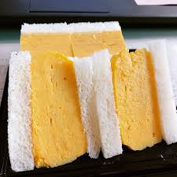

京都のおすすめグルメ
はじめに




私は京都出身の母親を持ち、小さい頃に京都の祖父母にご馳走してもらった京都のグルメ。
食べることが好きな私が、今でも忘れられない京都のおすすめグルメをご紹介します！
今回ご紹介したグルメはお取り寄せ可能です！
ご注文はショッピングページをご覧ください！
←←←←←その他おすすめページへリンクします
私は京都出身の母親を持ち、小さい頃に京都の祖父母にご馳走してもらった京都のグルメ。
食べることが好きな私が、今でも忘れられない京都のおすすめグルメをご紹介します！
今回ご紹介したグルメはお取り寄せ可能です！
ご注文はショッピングページをご覧ください！
←←←←←その他おすすめページへリンクします